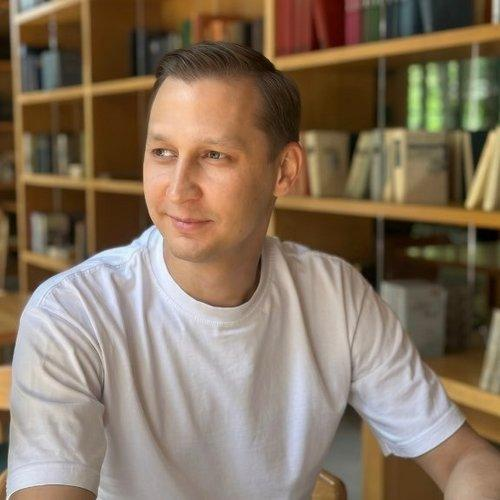

Руководитель направления сопровождения фондирования
Профессионал с 10-летним опытом операционного сопровождения кредитования юридических лиц. Прошёл путь от старшего специалиста до руководителя группы внутри одной компании, выстроив подразделение с нуля. Обладаю двойной экспертизой — финансовой и юридической — и работаю как с корпоративной, так и с межбанковской стороной кредитных процессов.
Портфель на текущей позиции
Опыт работы
Выстроил и возглавил с нуля группу сопровождения кредитных процессов, пройдя путь от старшего специалиста до руководителя за 1,5 года. Сопровождаю привлечение кредитных средств для группы компаний: 3+ юрлица, 10+ кредиторов, включая банки топ-20. Отдельно курирую сопровождение банка группы: договоры МБК и банковские гарантии в части контроля ковенант.
Старший специалист группы — март 2024 – сентябрь 2025
Сопровождал реструктуризацию и рефинансирование кредитного портфеля в рамках масштабной программы кредитных каникул, охватившей широкий периметр заёмщиков крупного и корпоративного бизнеса. Проводил мониторинг финансового состояния заёмщиков и оценку кредитных рисков по требованиям ЦБ РФ 590-П, 611-П.
Участвовал в автоматизации рабочих процессов отдела; обучил 3 новых сотрудников.
Ведущий специалист (10.2019–08.2020)
Главный специалист отдела оформления КОД — повышение за результативность (09.2020–07.2021)
Расследование уголовных дел в сфере экономики: анализ финансовых схем, работа с первичной документацией, взаимодействие с банками и налоговыми органами.
Подготовка договоров по кредитным и обеспечительным сделкам, мониторинг финансового состояния заёмщиков и оценка рисков; анализ финансово-хозяйственной деятельности заёмщиков для кредитного комитета.
Ключевые компетенции
Образование
Языки
Дальше
Рассматриваю позиции на стыке корпоративного и межбанковского кредитования — синдицированное и клубное финансирование, работа с публичным долгом, финансовые институты, treasury-направление.